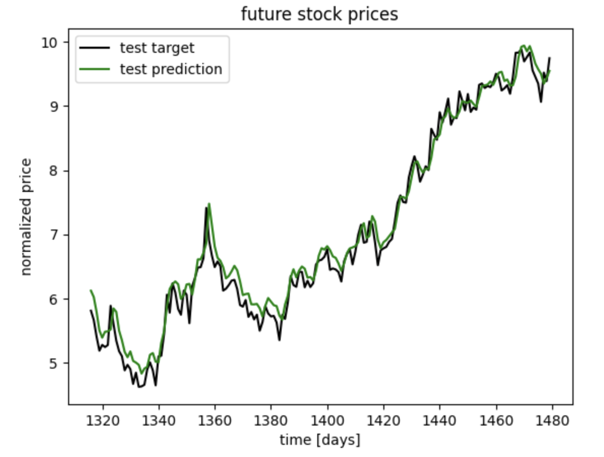
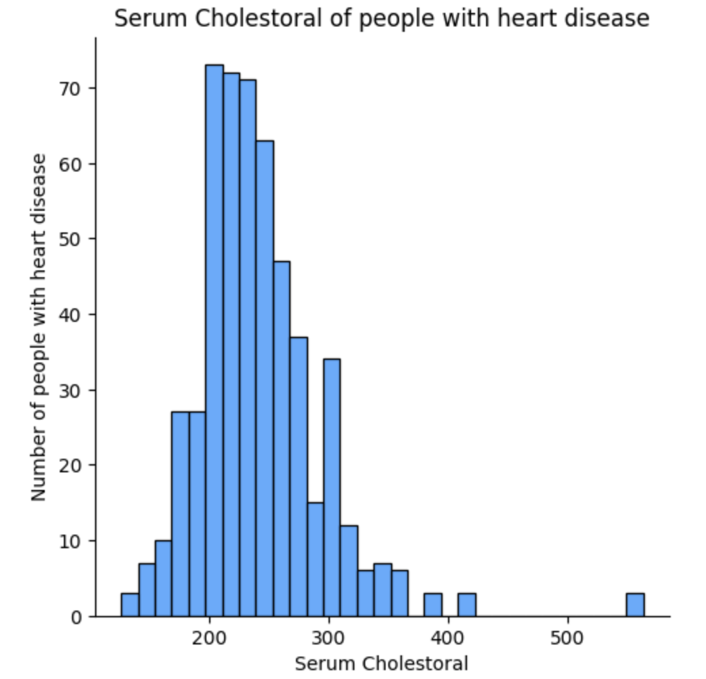
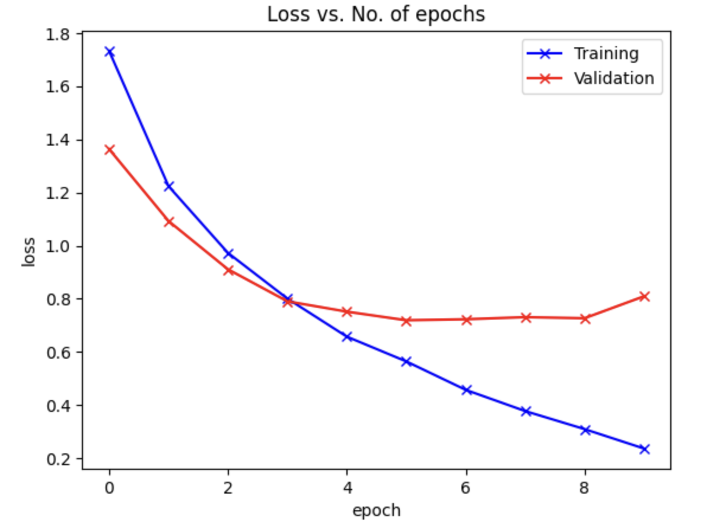
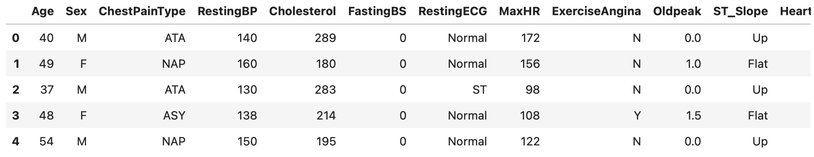

This project demonstrates a robust framework to forecast stock market trends for any company (example: Amazon). By utilizing historical stock price data such as Open, High, Low, and Close prices, an LSTM network implemented in PyTorch predicts future stock prices. Comprehensive data visualization techniques, normalization, sequence transformation for time series prediction, and a clear comparison of actual vs. predicted prices are included. The model is customizable, allowing changes to the stock ticker, LSTM architecture, sequence length, or number of epochs. It even provides forecasts for the next 10 days' stock prices. A perfect blend of machine learning and finance, this project serves as a valuable tool for understanding stock market dynamics, intended for educational and research purposes only.
 GitHub Repo LinkThis project provides an in-depth analysis and comparison of various machine learning models to predict heart disease. Leveraging a publicly available dataset, the project explores the relationships between variables such as age, gender, cholesterol levels, and chest pain types through comprehensive visualizations. Three models are employed: Logistic Regression, K-Neighbors, and Random Forest classifiers, each evaluated using the f1 score to understand precision and recall capabilities. Among them, the Random Forest Classifier emerged as the most effective, achieving an f1 score consistently above 97% on the test dataset. This work not only offers insights into heart disease prediction but also serves as a comparative study on the effectiveness of different modeling techniques.
 GitHub Repo LinkThis project showcases the development and evaluation of three deep learning models to classify images from the FashionMNIST dataset using PyTorch. Three distinct architectures are explored: a Simple Linear Neural Network, a Multilayer Feed-Forward Neural Network, and a Convolutional Neural Network employing the TinyVGG architecture. Comprehensive functionalities are included, such as training and testing functions, metrics computation, result visualization, and model saving/loading capabilities. The project offers insights into various model performances and provides visualizations like random sample predictions, confusion matrix plotting, and cross-model comparisons. It serves as a valuable example of applying different neural network architectures to a real-world computer vision task.
GitHub Repo LinkThis project demonstrates the construction and implementation of a Convolutional Neural Network (CNN) using PyTorch to classify images from the CIFAR-10 dataset, a collection of 50,000 32x32 color training images and 10,000 test images across 10 different classes. As opposed to the previous project on the Fashion MNIST dataset, The CIFAR Dataset uses 3 cchannel images as opposed to 1, providing more challenges when it comes to model construction and data preparation. The CNN's architecture includes alternating Convolutional and MaxPool2d layers, followed by Flatten and Dense layers, tailored for the 10 classes in the dataset. The model was trained for 10 epochs using the Adam optimizer, achieving consistent validation and test accuracies of over 75%. The project includes detailed data preparation, model building, training, evaluation, and prediction functionalities. It illustrates a practical application of CNNs in image classification and offers avenues for further accuracy improvement through hyperparameter tuning and data augmentation.
 GitHub Repo LinkThis project presents a machine learning model to predict heart disease using PyTorch, applying linear layers interwoven with ReLU activation functions. The dataset comprises various health metrics such as age, sex, chest pain type, resting blood pressure, and cholesterol level. The model architecture consists of three hidden layers (40, 80, and 60 neurons) and an output layer for binary classification. The project encompasses comprehensive steps including data loading, preprocessing (one-hot encoding), training/testing split, neural network definition, and evaluation. Achieving over 90% accuracy on the training dataset and consistently over 80% on the testing dataset, this model demonstrates a successful application of neural networks in healthcare. Future work could explore hyperparameter tuning, architectural adjustments, and preprocessing enhancements.
 GitHub Repo Link